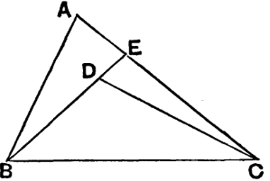

Proposizione I.21
Prop. I.21, a technical result used for a single proposition in Book III.
Proposizione I.21 - If from the ends of one of the sides of a triangle two straight lines are constructed meeting within the triangle, then the sum of the straight lines so constructed is less than the sum of the remaining two sides of the triangle, but the constructed straight lines contain a greater angle than the angle contained by the remaining two sides.
Proof - From the ends B and C of one of the sides BC of the triangle ΔABC, let the two straight lines BD and DC be constructed meeting within the triangle. I say that the sum of BD and DC is less than the sum of the remaining two sides of the triangle BA and AC, but BD and DC contain an angle ∠BDC greater than the angle ∠BAC. Draw BD through to E. Since by Prop. 20 in any triangle the sum of two sides is greater than the remaining one, therefore, in the triangle ΔABE, the sum of the two sides AB and AE is greater than BE. Add EC to each.
AB + AE + EC > BE + EC
AB + AC > BE + EC
Then the sum of BA and AC is greater than the sum of BE and EC. Again, since, in the triangle CED, the sum of the two sides CE and ED is greater than CD, add DB to each, therefore the sum of CE and EB is greater than the sum of CD and DB. But the sum of BA and AC was proved greater than the sum of BE and EC, therefore the sum of BA and AC is much greater than the sum of BD and DC. Again, since in any triangle the exterior angle is greater than the interior and opposite angle I.16, therefore, in the triangle CDE, the exterior angle BDC is greater than the angle CED. For the same reason, moreover, in the triangle ABE the exterior angle CEB is greater than the angle BAC. But the angle BDC was proved greater than the angle CEB, therefore the angle BDC is much greater than the angle BAC. □